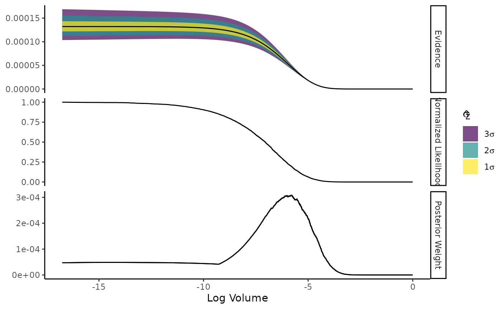

Nested Sampling with Ernest
nested-sampling-with-ernest.RmdThe Easy R Nested Sampling Toolkit (ernest) provides a collection of
tools for performing nested sampling within R. To begin
sampling, ernest requires the user to specify two objects:
- A log-likelihood function,
- A prior distribution, provided in the form of an
ernest_priorobject.
The log-likelihood function must take in a single argument consisting
of a vector of parameters, and must return either a finite scalar
numeric value or the value -Inf. As an example, we can
define the log-likelihood of a 3D Gaussian distribution.
n_dim <- 3
sigma <- diag(0.95, nrow = 3)
det_sigma <- determinant(sigma, logarithm = TRUE)$modulus
attributes(det_sigma) <- NULL
prec <- solve(sigma)
log_norm <- -0.5 * (log(2 * pi) * n_dim + det_sigma)
# Log-likelihood of a MVN(0, Sigma)
log_lik <- function(theta) {
drop(-0.5 * crossprod(theta, crossprod(prec, theta)) + log_norm)
}
log_lik(c(0, 0, 0))
#> [1] -2.679876The prior is provided through an ernest_prior object,
which contains information about the parameter space of interest. Ernest
conducts its sampling within the unit cube, and uses the
ernest_prior to transform these unit cube samples into the
space of the original prior. The user can choose to build their own
prior by offering a transformation function explicitly: For every
-length
vector in the [0,1)-unit cube, this function should output a
-length
vector of parameters. In the case of independently-distributed
parameters, this is identical to applying the inverse cumulative
distribution function (CDF) of the prior distribution to each element of
the input vector.
This function, along with the number of dimensions within the prior
space, is then given to create_prior(). This prior
specifies a 3D prior space with
marginals.
transformation <- function(x) {
x * 20 - 10
}
user_prior <- create_prior(
fn = transformation,
n_dim = n_dim
)For several priors, ernest provides convenience functions with fast implementations of the required transformation. One such function exists for the uniform distribution:
unif_prior <- create_uniform_prior(n_dim, lower = -10, upper = 10)Both objects are forwarded to nested_sampling() to
prepare a nested sampling run. This function also sets a number of
additional parameters to control the sampling process. The most
important of these is n_live, which specifies the number of
live points to use during the sampling process.
sampler <- nested_sampling(log_lik, unif_prior, n_points = 1000)
sampler
#> An <ernest_sampler>: 1000 points x 0 iter. x 0 lik. callsThe result is an ernest_sampler object, which is an
R6 class. This allows ernest to start or continue nested
sampling runs using previous results. The nested sampling loop is
started by calling the generate method for
ernest_sampler, which will perform sampling until some
stopping criteria is met. By default, this criterion is the estimated
untraversed prior volume falling below 0.05.
run <- generate(sampler)
sampler$run
#> An <ernest_run>: 1000 points x 9268 iter x 231700 lik. calls
#> → Log. Evidence: -8.932 ± 0.082Results are stored in ernest_run objects, which
themselves have several methods. This includes summary,
which provides the estimate evidence estimates as a tibble,
and plot, which visualizes how the evidence estimates and
related quantities changed throughout a run.
summary(run)$run |> head()
#> # A tibble: 6 × 7
#> call log_lik log_volume log_weight log_evidence log_evidence_err information
#> <int> <dbl> <dbl> <dbl> <dbl> <dbl> <dbl>
#> 1 25 -148. -0.001 -147. -156. 4.46e-33 -1.99e-62
#> 2 50 -140. -0.002 -138. -147. 3.32e-31 -1.10e-58
#> 3 75 -137. -0.003 -135. -144. 1.50e-30 -2.25e-57
#> 4 100 -125. -0.004 -123. -132. 5.30e-28 -2.81e-52
#> 5 125 -121. -0.005 -120. -128. 3.70e-27 -1.37e-50
#> 6 150 -120. -0.006 -118. -127. 7.34e-27 -5.38e-50
plot(run)